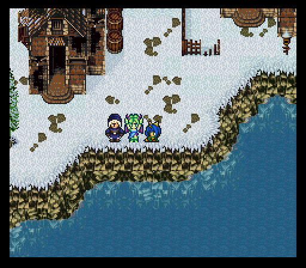
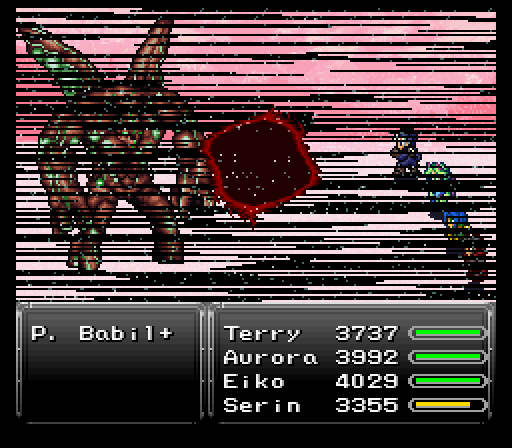
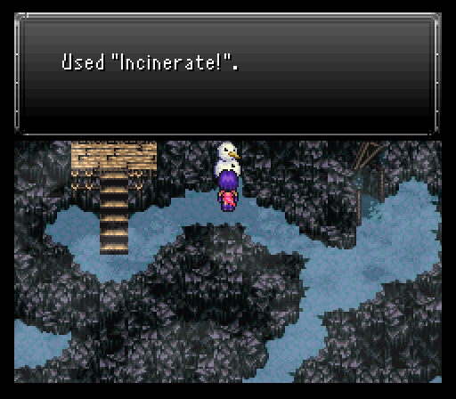
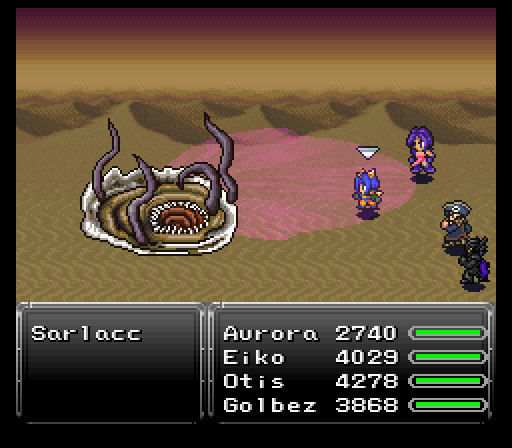
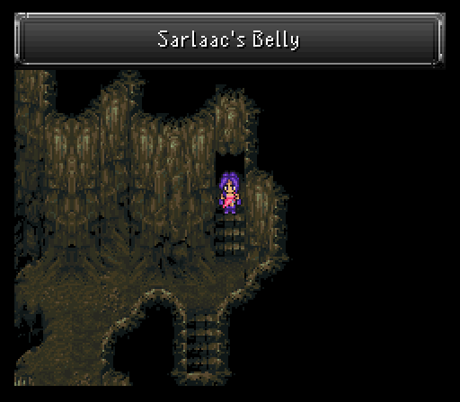
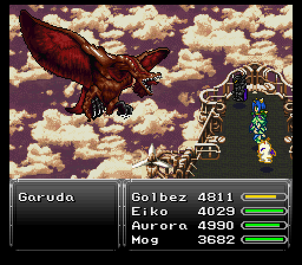

Part 24: Proto-Babil & The Sarlacc
Aurora's return:
Now with my badass black magic fighter in the party, I can start checking out areas either for characters to get back in my party or loot to grab. May as well start everything off with wrapping up Aurora's plotline.
Back at Ruta Village, head into the southwestern house. Provided you've done the first visit here, there should be a dog that heads behind the bookcases. Follow it and you'll find Aurora & Roxanne.

After a brief conversation, our buddy Proto Babil comes knocking on Ruta Village's doorsteps once more. Head outside and you'll engage the titan in battle once more. Nothing seems different besides it using Scatter Missiles which is pretty nasty actually and requires a Cura or two to get back to safe hp totals.
After dealing enough damage, it glows, then uses Hell Wind twice to knock out two people from your party and back to the airship. Clearly the jerk did not want any shenanigans because he blew away my Golbez & Otis. Luckily I brought four people I was confident in dealing damage so Eiko & Serin get to see the jerk power up.
As if on cue, Terry & Aurora come out. Aurora's clearly not going to let this jerk destroy hope around here so she instantly transforms as the real fight begins.
Proto Babil EX actually absorbs lightning now (it didn't before powering up), but it retains its weaknesses to earth & water. It also retains all of its attacks from the first half of the fight which includes the deadly Scatter Missiles. Considering it loves to follow up with a physical strike, it could easily spell death if the individual takes enough missiles to go down to 200-300 hp.
New attacks from Proto Babil EX include lots of lightning based moves like Wave Storm & Giga Volt and earth based moves like Magnitude Eight (not super damaging) & Quake (very damaging. Can easily do 1500 or more damage without earth resistance). It also has some strong single target nukes in Delta Attack (after using Search Scope), Magitek Missile, Ninth Dimension, and its special attack Object 199. It'll also use Force Field after a set amount of time, which eliminates one random element.
The most surprising attack goes to Flare Star. Not because we haven't seen the attack, but because it does something no other boss has actually done...focus an attack that's typically only ever aimed at the entire party. Suffice it to say anyone without fire resistance is going to die instantly, but luckily it doesn't seem too keen on spamming this.
Strategy here would be to get Aurora into the back row and toss a Rubber Shield onto her to block all the lightning attacks she'll no doubt be taking. Also, it's a good idea to get everyone floating if there's a chance during your damage dealing. The less you have to worry about Quake's damage, the better. You can achieve this easily of course if Eiko is present and has Sylph equipped, and then Proto-Babil EX will only damage himself!
As for Terry, he's a temporary party member for just this battle, but he can handle himself just fine on the frontlines due to good defenses and lightning immunity. Delta Attack & Object 199 might do a fair bit of damage to him, but he has more than enough hp to take at least one, maybe two hits from those moves.
Steal wise, Proto Babil EX has a valuable Void Stone to grab. It'll drop the Daedric Shield upon its death.

After the battle, Aurora comes to grips with her feelings, realizing her devotion to taking care of the children and protecting them is what's called "love". Love doesn't always have to mean a relationship with a significant other. It can be what Aurora's doing...and to keep that promise close, she's joining back up with the party to ensure the kids have a future to look forward to. Great cause more sources of being able to cast Curaga in the future will be extremely vital.
With Aurora back in action finally, the next task I want to deal with is returning to Fraust. There's lots of stuff to check out there, but I'm only interested in doing one quick thing in order to help us out a bit in the next part. My entry into town isn't through the front gates, but rather the secret passage once more. That's done because there's a snowman you can interact with once you get out on the cliffs.
With the Incinerate! key item, you can melt the snowman and free the soldier inside. We've heard of frozen epsers, but frozen soldiers? Anyway he rewards you with a key item, the Arkenstone. This greatly boosts your vision range in areas where it gets reduced, which will be experiencing soon.
Underground caverns:
Now that that's done, our next point of interest is the island north of Quartz Village. There's a small patch of desert which, if you wandered around there in the World of Balance, had a rare Cute UFO encounter. Here though, that Cute UFO has been replaced by a Sarlacc...yes that Sarlacc from George Lucas's sci-fi action saga Star Wars.
Sarlaccs seem threatening with their repeated Quake spam and their powerful special move Flatten doing a ton of damage, but the reason I'm here is their third move, Inhale. This sucks a character into the Sarlacc's body. If all four of your characters get sucked in, you actually get whisked to a new cavern to explore. So we'll just let it have its way with us until that happens, making sure to not have any characters get KO'd in the process. In fact it'd be wise to come into the battle with everyone in the back row and pre-floated, to avoid Quake and just use Defend and heal up until everyone gets enhaled.
The new enemies in this cave are not to be taken lightly. They have a fair chunk of hp and can hit really hard. Fire, water, and lightning resistance would be a great asset for as many of your characters to have, especially if you run into Shinobis. Good magic casters would be a great idea for them since Shinobis love countering everything with Jitsu of Fushin to makes themselves invisible.
Other monsters inhabiting Sarlaac's belly are:
- Auroch - A physical beast with an extremely strong special attack called Headbutt.
- Garo - Counters spells with Flare or Break. Can steal Wraith Blades from 'em.
- Harbinger - Fire-based spellcaster.
- Malpixie - Uses Love Token, Charm, and Death Roulette. Counters regular attacks with Vertigo. Focus on taking them out right away.
- Wart - Uses Stop and Slowga. Counters regular attacks with Beam Out.
- Whisper - Can open up with Flare Star. And also has access to Charm. Counters Throw by throwing a weapon of its own.
Thankfully, this cavern isn't too big. The first major room you'll see has several bridges with some mole guards. If any of them ram into you, you'll be knocked to the level below. The treasure on the bridges are good with a Quick Ring, Shatterhand, and a new Mark V Armor with good defensive stats, stat boosts, and auto regen.
As for getting knocked down...you'll actually want that to happen at least once since there's a few things you can get that you'd otherwise be unable to grab. Those things are a Varia Suit (Bit lacking on the magic defense side, but grants resistance to ice along with nullfying poison & fire), an X-Ether, and Otis's parrot. If you bring Otis in your party, he'll rejoin his captain on the ship and sell you Atomic Balls and Aethers. I suppose a parrots gotta make money somehow!

After getting through the bridge room, it's all linear to the end. Smooth sailing though is another story...and it's not because of the rampant appearance of Warts from Super Mario 2 on the nes. Your vision gets extremely hampered which makes the room after the small connecting one all the more dangerous. Thanks to the Arkenstone, however, our vision is much less hampered! That room has a ceiling that rises, then comes crashing down. Say hello to a game over if you're under one of those falling ceilings.
The good news? The dungeon hasn't changed up in terms of its design from vanilla. Even with the massively reduced vision, if you played vanilla enough, then you should know that the first two chests have safespots on their immediate south. I don't believe the third does, but you can always duck south to get out of the falling ceiling zone, then duck back in to claim the loot after it begins to rise again.


Once you're past that room, it's smooth sailing with one final chest that holds the Moon Pearl. This amazing relic increases Otis's Jump skill damage by 50%. Now we can make our way into the final room and the true prize...Mog. He rejoins the team, but not before mentioning that there's a Heartless that loves mimicking in Fraust's mines. This unique entity will only respond to Mog...and boy is it going to be awesome when he does, believe me. That means I have everything I need to get what I want from Fraust. For an easy exit from Sarlaac, use Teleport.
Garuda & the Holy Lance:
I did say I was going to check out Fraust, but I wanted to get one more problem out of the way and it awaits in the skies. While flying around, you may have a rude run-in with a beast known as Garuda.
Garuda can be extremely dangerous. Firstly make sure your levels aren't multiples of 5, as it can open up with Level 5 Death. And after that a chance to use Mind Blast. Omega Claw basically murderers frontliners without high defenses & protect while Giga Volt & Aero along with tier 3 elemental spells will wreck anyone not packing good magical resistances.
Despite all this, it's very possible to kill Garuda right after you get the airship. If you pickup four Misty Coats from Taured, that'll keep you safe from Aero. Rubber Shields will nullify Giga Volt and Reflect Rings will take care of the rest. It does mean you'll have to burn a bunch of Recharges to deal with anyone taken out by its physicals, but it just goes to show how a proper gear setup can let you tussle with a boss far more dangerous and skilled than you.
Garuda's other interesting gimmick is that after a set amount of time has passed, it will either use Mighty Guard on itself and keep fighting, or run away. If you run into it again though, it'll keep whatever damage you dealt to it from the previous battle. With that, you can whittle down the beast over several battles, healing & saving after each fight you make it out of alive.

The boss only drops one thing, but it's an extremely important key item, the Time Egg. If you were to bring this back to the new Esper World, there's an NPC that'll let you start the game from the very beginning, but with your inventory intact. A new game plus if you will. Other than that, there's one more important feature of the egg we'll be seeing later on.
Finally, I make one detour to the coliseum to bet one of the Uchigatanas I got earlier on.

The enemy in question is a Weirdling who's not super nasty, but you'll need to pack an Exodus Token or some other instant death repelling item if your character's level is a multiple of 5. You'll also want as much defense as you can muster since Power Word is a ludicrously strong special move to be hit by.
Prevail against the skeletal serpent and you'll get a Holy Lance. Small boost to magic, but tons of attack power, holy elemental, and randomly casts Holy. This is going to be the perfect weapon for Otis to utilize, especially if he can get Serin to back him up by applying a holy weakness to the enemy he's targeting.